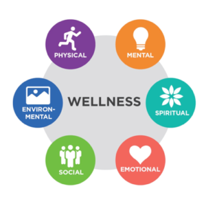

The Global Wellness Institute defines wellness as the active pursuit of activities, choices and lifestyles that lead to a state of holistic health.
Wellness Is Multidimensional Wellness is about more than just physical health. Most models of wellness include at least six dimensions (and sometimes up to 9 or 12):: Wellness infographic 
Physical: Nourishing a healthy body through exercise, nutrition, sleep, etc.
Mental: the world through learning, problem-solving, creativity, etc.
Emotional: Being aware of, accepting and expressing our feelings, and understanding the feelings of others.
Spiritual: Searching for meaning and higher purpose in human existence.
Social: Connecting and engaging with others and our communities in meaningful ways.
Environmental: positive interrelationships between planetary health and human actions, choices and wellbeing.
Med-Wellness is a local business based in London, Ontario.